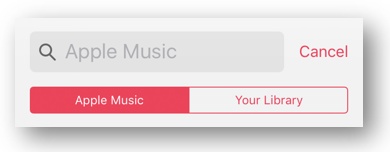

Overview
This case study was a two week sprint project, where I had to analyze iOS users’ behaviour and pick an iOS stock application to work on. The goal was to identify users needs and use a feature-focused approach to address those needs within the stock application.
Launched in 2015, Apple music is a subscription based music streaming platform.
I picked Apple Music because many loyal iOS users were intentionally uninstalling Apple Music for other third party applications such as Spotify and YouTube Music. This further intrigued me to look deeper into what were some frustrations
users were facing and how I could modify Apple music to resolve these issues.
Design Process
User Research
In total, I interviewed 10 users for this project. Users were recruited through my designer peers and through social media advertising.
While conducting additional rounds of interviews, I discovered that there were two kinds of users on Apple Music: users who are subscribers - and thus use the streaming service -, and free user - who use it to listen to their own downloaded music.
Problem
Using affinity mapping, I synthesized my research and identified two problems.
1) Tab Bar
The tab bar was unnecessarily cluttered. Labels were unclear and redundant, thus causing confusions among users.
2) Search feature
The UI for the search function was overly complex, requiring users to pay extra attention during use.
Hypothesis
I believe that by reducing the number of options in the tab bar, changing the labelling, and by giving users quick and easy access to the search function, we will improve the users experience by providing a more streamlined task flow.

Competitive Analysis
I did a competitive analysis to understand how other platforms structured their tab bar as well as how they placed their search functions within their interface. I unraveled that compared to Spotify and YouTube Music, Apple Music had the most icons/options on their tab bar as well as having the most complex search system due to having a multi-step search process. Compared to Apple Music, users in other platforms have an easier time utilising the search function due to lower complexity, allowing them to quickly locate their favourite songs

Online Survey
I made an online survey to better understand how users felt about the bottom tab bar and the search function. *JASONS COMMENT: this following sentence is way too vague*The survey was really the most eye opening part of the case study, because it really gave me a lot of insights on really nailing down the user frustrations and suggestions on how users would like to redesign Apple Music tab bar and search function.
Insight #1:
Users said that five icons were too much and majority prefered three icons.
Insight #2:
Users felt the icons were redundant or had the wrong labels
A) 90% said "Browse and search sound similar."
I found that many users expressed that they were very confused and misled by the Browse and Search label, as it sounds like it would have the same function.
B) 70% said "I think that listen now and browse could perhaps live under the same icon."
Many users expressed in the survey how the listen now and the browse tab looked very similar and felt that it was unnecessary to have two separate tabs that served the same function. Surprisingly, a few users suggested combining the two pages to prevent clutter. This idea can also be seen on Spotify, where a Home page covers both Listen now and Browse pages.
C) 100% said "Remove Radio tab and put it in a category."
100% of my online survey participants said that they wished to see the Radio page removed from the tab bar and relocated to a category section as it was their most underused icon. Users also expressed how they did not like the Radio icon at the center of the tab bar as they felt that the center spot should be given priority to icons that were most used.
Insight #3:
Label confusion for "Listen Now" aka Music suggested for you.
"I think that Listen Now doesn't have to have a separate icon as there's already the current music playing bar right above this tab bar." (Unsubscribed user)
"The Listen Now first confused me because I thought it was talking about the song I was currently listening. But I found out it was just a recommendation page." (Subscribed user)
I discovered these two comments, which both made the assumption that “Listen now” page was a now playing page. The labeling was really misleading users and I wondered why the unsubscribed users did not notice that it was a recommendation page. So later on, when I asked further questions, unsubscribed users said that they did not have access to that page. **JASONS COMMENT: in what way did it help you??** This was very a important discovery as it helped me to iterate my sketched out wireframes later on.
Apple Search function

One of the main problem users expressed is with how the Apple Music search interface is based on a system where you need to pick one mode. You need to either pick Apple Music or your Library. This feature does not provide a search for both and will give you the “No results” if you pick the wrong one.
This search bar is unnecessarily complex, requires extra attention to detail and extra steps are needed to achieve the task goal.
Sketching & Iterations
Redesign
1. I reduced the number of options on the tab bar to three icons.
2. I combined Trending and For you (previously known as Browse and Listen now) into one Home page.
3. Browse becomes the old search page where users can browse categories and the radio option has been added into this category as well.
4. Search bar has been added to all pages, it will stay hidden until users use a familiar gesture of toggle/drag downward to see the search bar.
5. I have also made the search bar capable of providing results from both the users’ library and Apple Music in one quick search.
Wireframes
User Flow
This is the straightforward primary flow that shows how users would navigate throughout the app, utilizing a more intuitive search bar to more efficiently find their song.
Information Architecture
Since I redesigned the tab bar and the search bar, I created a site map to allow users and businesses to better understand the navigation structure changes within my proposed design. The red boxes are modifications that I have made to better meet user needs.

Prototype

Next Steps
With the following proposed changes to the tab bar and the search function, users will now have more a streamlined, familiar task flow.
I was also able to identify the following additional trends, which if given a larger scope (of time constraint), I would be interested in exploring:
1) Integrate Apple Podcast and Apple Music into one platform.
2) Make the onboarding experience more intuitive
3) Reorganize the content on the pages (i.e. Browse).